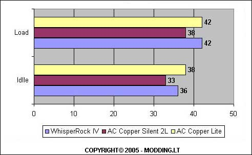

Arctic-Cooling “Copper Lite“
Neseniai apžvelgiau „AC Copper Silent 2L“ CPU aušintuva, kuris tikrai man paliko malonu ispudi. Bet juk ne visu skonis vienodas. Ir tikrai ne visiems reikia super ryškiai švieciancių ventiliatorių. Kai kam labiau patinka konservatyvaus dizaino aušintuvai, kurie aušinimo galimybėmis ne ka nusileidžia novatoriškiems. Todel jums šiandien pristatau „AC Copper Lite“ aušintuva.
Žvilgsnis iš arciau
Kaip jau turejote suprasti, šis aušintuvas yra konservatyvaus dizaino, todel visai nenustebau pamates žavia, bet iprasta juoda dežute su detalias aprašymais ir aušintuvo nuotrauka.
Dežutes turinys irgi gan kuklus:
- AC Cooppr Lite aušintuvas
- AC MX-1 termo pastos tubele
- AC korpuso lipdukas (case badge)
Pats aušintuvas yra kiek neiprasto dizaino. Na bent lyginant su kitu firmu aušintuvais :) Šis modelis kaip ir neseniai apžvelgtasis „Copper Silent 2L“ turi neiprastos formos nekorpusini ventiliatoriu. Gaila, bet jo mentes neužapvalintos, todel, neatsargiais elgiantis, galima susižeisti pirštus. Taip pat šis ventiliatorius nešviecia yra pagamintas iš nuobodžios juodos spalvos plastmases. Tai gali kai kam nepatikti.
Aušintuvas pasižymi subtiliu radiatoriaus dizainu, kurio nelabai galiu apibudinti žodžiais. Geriau pažiurekit patys:
Manau, paskutineje nuotraukoje pastebejote, kad šis radiatorius yra vario ir aliuminio hibridas. Tiksliau pasakius, šis aliumininis radiatorius turi imontuota vario šerdi, kuri labai pagerina šilumos sugerimo galimybes. Taip pat visa apatine radiatoriaus dalis yra labai gerai nušlifuota ir nupoliruota, kas dar labiau pagerina kontakta su procesoriumi ir šilumos sugerima.
Techniniai parametrai
Suderinamumas:
- AMD Duron/Athlon XP
- AMD Sempron
Specifikacijos:
- Dydis: 88 x 82 x 79 mm
- Greitis: 2200 RPM
- Oro srautas: 19 - 32 CFM / 32 - 55 m3/h
- Energijos suvartojimas: 12 V, 0.25 A
- Garsumas: 1 Sonas
- Termo varža: 0.48 °C / W
- Svoris: 300 g
Montavimas
Šis aušintuvas turi supaprastinta tvirtinimo „klipsa“, todel su šia naujokui baisia užduotimi susidoros bet kas, kas moka gerai lankstyti pirštus ir naudotis atsuktuvu :) Štai tas imantrus „klipsas“:
Kaip supratote, montavimo operacijai neprireiks iprasto plokšcio atsuktuvo. Ši karta naudosimes kryžminiu :) Pirmiausiai, reikia nuimti sena aušintuva ir nuvalyti termo pasta. Užtepti naujos ir morališkai pasiruošti aukštojo pilotažo ranku judesiu manevrams. Pirmiausiai, rekomenduoju naujaji aušintuva tiksliai uždeti ant procesoriaus centro, taip, kad „keistatis klipas“ butu aršiausiai pirmojo CPU pino esancioje puseje. Tada atsargiai, stengiantis nepajudinti aušintuvo, užkabinti priešingoje puseje esanti „klipsa“.
Cia ir prasideda aukštasis pilotažas :) Reiks viena ranka prilaikant ka tik užkabinta „klipsa“ ir užkabinti „keistaji“. Ji taip pat prispausti ir kita ranka atsargiai priveržti varžta.
Štai ir viskas :) Manau nebuvo labai sudetinga...
Testavimas
Štai mano PC konfiguracija:
- Mainboard - DFI Infinity NFII Ultra
- CPU - AMD AlthonXP 2400+ @ 2000mhz
- RAM - PQI DDR 2x256 Mb 266Mhz
- HDD - Seagate Barracuda 40 GB 7200rpm + 120 GB 7200rpm
- Video - ATI Radeon 7500 64 MB VIVO
- DVD+/-RW - LiteON DVD+/-RW 8x4x8x12x SOHW-812S
- PSU - Silver Power 350W (sleeved) OS - W2K SP4
Kaip buvo testuota:
- Idle: Kompiuteris, dirbantis „tušcia eiga“, buvo paliekamas geram pusvalandžiui.
- Load: Kompiuteris geras 20 min. buvo kankinamas sintetiniais testais, tokias kaip PCMark 2001, 3DMark 2001, SiSandra, SuperPI, Prime95 ir kt. Dažniausiai šios programos buvo leidžiamos vienu metu, siekiant kuo labiau apkrauti procesoriu. Kambario temperatura buvo tokia pati, kaip ir idle busenos metu.
Na štai ir ilgai laukti rezultatai:

Iš rezultatu matome, kad tai gan neblogas aušintuvas, todel beliko susumuoti pliusus ir minusus.
Pliusai
- Tylus
- Lengvas
- Pakankamai gerai aušina
- Nebrangus (~16€)
- Supaprastintas montavimas
- Prideta kokybiška termo pasta
Minusai
- Nešviecia (moderiams tai gali nepatikti)
Taigi matome, jog pliusu persvara yra tikrai ženkli :) Galiu drasiai teigti, kad „AC Copper Lite“ aušintuvas yra tikrai vertas demesio ir išleistu pinigu. Todel šiam aušintuvui suteiki [b]9 balus iš 10 galimu[/b]
Padeka ir HappyEnd
Modding.lt komanda dekoja firmai Arctic-Cooling už apžvalgai suteiktus produktus.
Beje, jei noresite pakomentuoti mano straipsni arba pareikšti savo nuomone, apsilankykite Modding.lt forume.


{kind=link}
{kind=link}
{kind=link}
{kind=link}
{kind=link}
{kind=link}
{kind=link}
{kind=link}
{kind=link}
{kind=link}
{kind=link}
{kind=link}
{kind=link}
{kind=link}
{kind=link}
{kind=link}
{kind=link}
{kind=link}